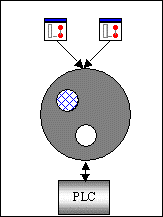

Clustered Agent Servers, previously known as hot standby, provide both client and server redundancy enabling high availability of the system. Typically, redundancy can be applied to all the levels within the plant.
For more details on addressing the important issues that affect the operation and configuration of clustered Adroit Agent Servers, see Important Points to consider when Clustering Agent Servers.
There are three general components in Adroit which are aware of redundancy, namely, the clients, the servers and the server I/O, as illustrated below:

In Adroit, an Agent Server can be setup to be a cluster server, which is a set of two Agent Servers running a replicated database (WGP file) on the same project. A cluster Agent Server can be networked with other normal (non-cluster) Agent Servers.
The general idea of clustering is that the master server services all the I/O and client tasks, while the standby server replicates the master server.
If the master server or computer fails, the standby server takes over as master and the UI’s and scanning tasks take appropriate action. There are three key mechanisms in Active Clusters namely catch-up, replication and switchover.
A clustered Agent Server:
A cluster Agent Server is either in the mode of master or standby server and can either be in the state of healthy or unhealthy.
Note: Certain agent types on a cluster server require synchronization of internal data structures with their master partner. For details, see Real-time Catch-up.
Also, some agents in an Agent Server have internal states that are unknown to and unsynchronised with the standby computer. Examples of such agents are: the Expression agent, the Recipe agent, the Counter agent, the Statistical agent and all other internal agents that do some calculation internal to the Agent Server.
All cluster information and operations including the historical synchronization can be viewed and managed within the UI by using the cluster-controlling graphic form.
See the Active Cluster Control tab of the System Management graphic form in the System Information project.
Basic principles of Agent Server mode assignment strategies
Configuring Agent Server cluster options
For more details on detecting and solving issues that most frequently prevent clustered Adroit Agent Servers from working, see Troubleshooting Clustered Agent Servers.